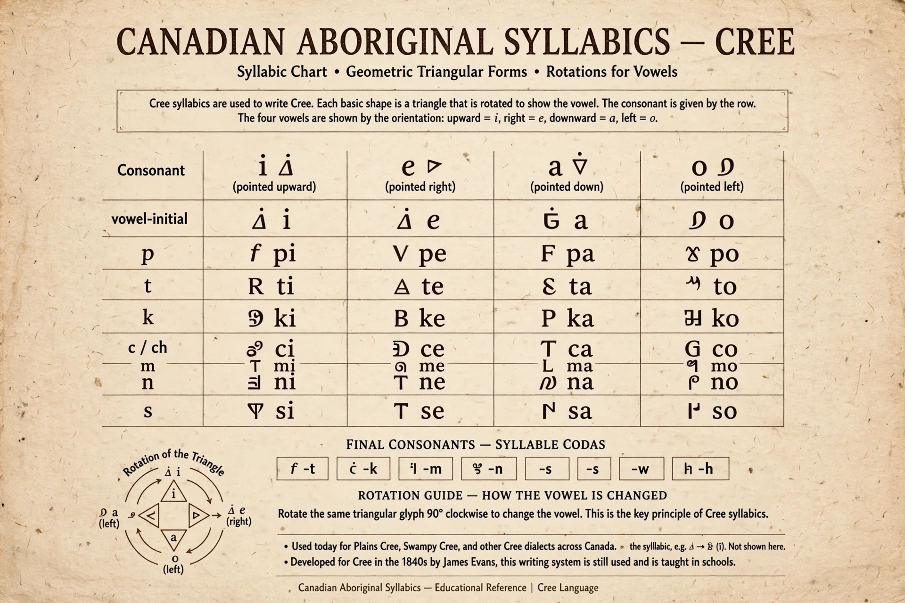

Canadian Aboriginal syllabic writing, or simply syllabics, is a family of writing systems used in a number of Indigenous Canadian languages of the Algonquian, Inuit, and (formerly) Athabaskan language families. These languages had no writing system before the introduction of syllabics, and syllabics are derived from the Devanagari-influenced shorthand experiments of missionary James Evans, combined in part with the angular characters of Pitman shorthand.
| Canadian Aboriginal syllabics | |
|---|---|
 | |
| Type | Abugida (syllabary) |
| Creator | James Evans (1840s) |
| Languages | Cree, Ojibwe, Inuktitut, and others |
| Unicode range | U+1400–U+167F (Unified Canadian Aboriginal Syllabics) |
Syllabics are an abugida: each glyph represents a consonant–vowel syllable, in which rotation of a basic shape indicates the vowel. Typically a triangle-based shape points in four directions for the vowels a, i, o (or e), and consonant finals are written with smaller superscript characters. The system is famously learnable in days, and literacy in syllabics among Cree and Inuit communities became very high in the 19th century.
Methodist missionary James Evans devised the system around 1840 at Norway House, Manitoba, initially for Ojibwe and then Cree, famously casting type from lead and printing hymns and scripture. The script spread with Cree, Ojibwe, and Inuit communities, was adapted for Inuktitut in the eastern Arctic (where ᖃᓂᖅ, qaniq, remains official alongside Latin in Nunavut), and was also adapted for languages including Blackfoot, Carrier (Dakelh), and Slavey.
Syllabics remain in daily use for Plains and Woods Cree, some Ojibwe communities, and Inuktitut in Nunavut and Nunavik, appearing on government signage, media such as Inuit broadcasting, and keyboards encoded in Unicode since version 3.0 (1999).
From Wikipedia, the free encyclopedia (recreated from memory).